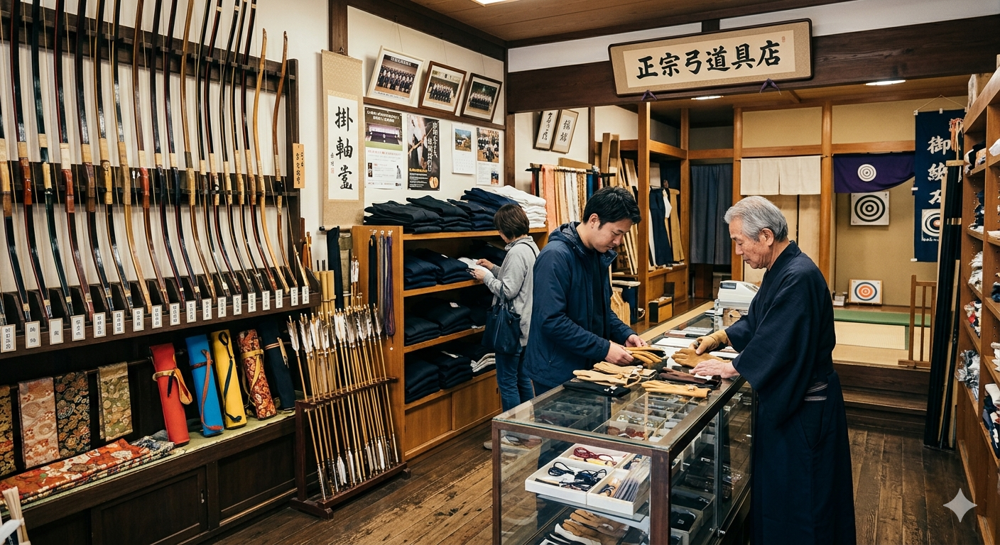
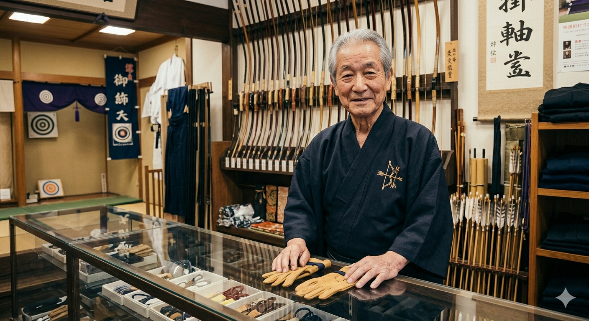

IKAI KYUGU — Since Osaka
矢・かけ・袴・弓——
初段を目指す部活生から、
段位取得を重ねる上級者まで。
猪飼弓具店が、あなたの弓道を支えます。

CONTACT & SHOP
メール・お問い合わせフォームにてご相談受付中。お気軽にどうぞ。
INTRODUCTION VIDEO
製造から販売まで手がける専門店ならではの知識と技術を、代表・猪飼英樹が直接ご紹介します。

猪飼 英樹ABOUT
猪飼 英樹 代表
大阪・淀川区に本店を構え、福岡にも店舗を持つ弓道専門店です。
弓具の販売にとどまらず、自社製造にも取り組み、品質と信頼を積み重ねてきました。
部活で弓道を始めたばかりの学生から、段位取得を目指す上級者まで、
一人ひとりに合った弓具選びをサポートします。
Instagram・YouTubeでも弓道情報を日々発信中です。
STUDENT'S VOICE
何を買えばいいか分からない
初めての弓具選び。矢やかけの種類が多すぎて、どれが自分に合うか見当もつかない。
顧問や先輩に聞きにくい
弓具のことを気軽に相談できる大人が周りにいない。専門的なアドバイスが欲しい。
予算内でいい弓具を選びたい
部活生にとって弓具は大きな出費。予算に合わせた最適な選択肢を知りたい。
猪飼弓具店なら、経験豊富なスタッフが初心者の疑問にも丁寧に対応。
予算・体格・レベルに合わせて、最適な弓具をご提案します。
問い合わせフォーム・SNSからも気軽にご相談ください。
REVIEW
有名で希少な弓具店。東淀川高校の弓道部に所属していた頃にお世話になりました。 矢、矢筒、かけ、袴などを購入しました。丁寧にご対応いただき、納得のいく弓具を揃えることができました。
問い合わせ・ご来店のお客様には、以下の特典をご用意しています。
弓具選びの個別相談
体格・段位・予算に合わせた弓具をスタッフが直接ご提案。初心者も安心してご相談ください。
セット購入でお得に揃える
矢・かけ・袴などをまとめてご購入の場合、お得なセット提案あり（詳細はお問い合わせください）。
学生・部活生サポート
弓道部への一括納品や、部活・学校向けのまとめ注文にも対応しています。
SNS・YouTubeで弓道情報発信中
Instagramでは日々の弓具情報を、YouTubeでは解説動画を公開。フォローして最新情報をチェック。
※特典内容は変更になる場合があります。詳細はお問い合わせください。
CONTACT
フォームからのお問い合わせ、またはInstagramのDMでも受け付けています。
初めての方もお気軽にどうぞ。